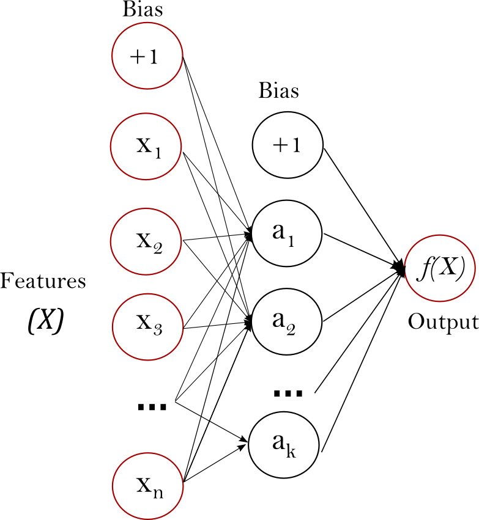

Neuronale Netze
Contents
Neuronale Netze#
Überblick#
Neuronale Netze sind relativ einfach strukturierte Modellfunktionen mit sehr vielen (teilweise auch redundanten) Parametern. Die Anpassung dieser Parameter führt zu hochdimensionalen, nicht-konvexen Optimierungsproblemen.
Anhand einfacher Beispiele wird das Verhalten von konventionellen bzw. stochastischen Gradienten-Verfahren untersucht. Außerdem werden beschleunigte Varianten betrachtet.
Multi-Layer Perceptron (MLP)#
Ein einfaches neuronales Netz das zur Bearbeitung von Klassifikations- und Regressionsproblemen eingesetzt werden kann ist das Multi-Layer Perceptron (MLP). Bei beiden Problemklassen wird versucht mit Hilfe eines Trainigsdatensatzes eine parameterabhängige Modellfunktion
anzupassen, die die Inputs möglichst genau auf die Outputs abbildet.
Bei der linearen Regression haben wir einen linear affinen Ansatz der Form
benutzt und dann die Parameter \(w\) mit Hilfe der Trainingsdaten möglichst gut (bezüglich des benutzten Loss) angepasst. Die dabei entstehenden Optimierungsprobleme waren relativ einfach beherrschbar.
Beim MLP benutzt man einen anderen, allgemeineren Ansatz für \(g\). Wir betrachten hier den Fall, dass der Output skalar ist, d.h. \(g:\mathbb{R}^n\times \mathbb{R}^p \to \mathbb{R}\).

Ein MLP hat dann folgende Struktur (Graphik von http://scikit-learn.org/stable/modules/neural_networks_supervised.html):
der Input \(X\) besteht aus den Komponenten \(X=(x_1,\ldots,x_n)\), sie bilden die Input-Layer
Linearkombinationen der Form
\[\begin{equation*} u_i = w_{i0}^{(1)} + w_{i1}^{(1)}x_1 + \cdots w_{in}^{(1)}x_n, \quad i = 1,\ldots, k \end{equation*}\]werden als Input für die „Neuronen“ \(a_1,\ldots, a_k\) der Hidden-Layer benutzt
jedes Neuron \(a_i\) wendet dann auf seinen skalaren Input \(u_i\) eine skalare Funktion \(a:\mathbb{R}\to\mathbb{R}\), die Aktivierungsfunktion, an, d.h. wir erhalten als Output der „Neuronen“ \(a_i\)
\[\begin{equation*} v_i = a(u_i), \quad i = 1,\ldots,k \end{equation*}\]der Output \(g(x,w)\) wird schließlich als Linearkombination
\[\begin{equation*} g(x, w) = w_0^{(2)} + w_{1}^{(2)} v_1 + \cdots w_{k}^{(2)} v_k \end{equation*}\]berechnet
\(g\) ist also durch
parametriert, d.h. die Anzahl der Parameter ist hoch. Da \(a\) nichtlinear ist, ist \(g\) auch nichtlinear.
Der Ansatz kann problemlos auf mehrere Hidden-Layers sowie vektorwertige Zielfunktionen verallgemeinert werden.
Mit Hilfe des Trainingsdatensatzes werden die Parameter \(w\) von \(g\) so bestimmt, dass der Loss minimiert wird. Die dabei auftretenden Optimierungsprobleme sind i.d.R. nicht konvex und werden üblicherweise mit Varianten des Gradientenverfahrens näherungsweise gelöst.
Für die Berechnung der dabei benötigten Ableitungen nach den Parametern \(w\) gibt es effiziente Methoden (Backpropagation).
Modellproblem 1-Neuron-MLP#
Um ein Gefühl für das Trainingsverhalten eines Netzes zu bekommen, betrachten wir ein triviales Netz mit einem skalaren Input, einem skalaren Output, einer Schicht mit einem Neuron und Aktivierungsfunktion \(r(x) = \max(0, x)\) (RELU, Rectified Linear Unit), d.h.
Als Trainingsdatensatz wird
benutzt.
import numpy as np
import scipy as sp
import matplotlib.pyplot as plt
import copy
seed = 123
%matplotlib inline
## Parameter festlegen
# Anzahl Neuronen
nn = 1
# Anzahl Trainingssample
ntrain = 11
a = 0
b = 1
# Anzahl Plotpunkte
nplot = 1000
Xplot = np.linspace(a-0.25, b+0.25, nplot).reshape(-1,1)
## Daten erzeugen
np.random.seed(seed)
#g = lambda x: np.sin(10*x*x)
g = lambda x: x
Xtrain = np.linspace(a, b, ntrain).reshape(-1,1)
#Xtrain = (np.random.rand(ntrain) * (b - a) + a).reshape(-1,1)
Xtrain.sort(axis=0)
ytrain = g(Xtrain)#.ravel()
#ytrain = ytrain + 0.1 * np.random.randn(*ytrain.shape)
plt.plot(Xtrain, ytrain, '.');
Die Parameter \(w\) sollen so bestimmt werden, dass
minimiert wird. Da \(g\) nichtlinear in \(w\) ist, ist auch \(f\) nichtlinear.
Für die Parameter \(\hat{w} = (1, 0, 1, 0)^T\) erhalten wir
d.h. \(g(x,\hat{w})\) interpoliert die Daten \(x_i, y_i\) exakt. Damit ist
und \(\hat{w}\) globales Minimum von \(l\).
Andererseits gilt für \(\alpha > 0\)
dass auch
ein globales Minimum von \(l\) ist und analog auch
Damit kann \(l\) nicht strikt konvex sein. Wie das folgende Beispiel zeigt ist \(l\) nicht einmal konvex.
#%matplotlib notebook
%matplotlib inline
relu = lambda x : np.maximum(0, x)
def l(w1, w3):
fw = 0.0
for x,y in zip(Xtrain, ytrain):
fw += (relu(w1 * x) * w3 - y)**2
return fw/Xtrain.shape[0]
l = np.vectorize(l)
from mpl_toolkits.mplot3d import Axes3D
plt.figure(figsize = (10, 10))
plt.axes(projection='3d')
w1 = np.array([ 0, 2])
w3 = np.array([-1, 1])
#w1 = np.array([ 0, 1])
#w3 = np.array([-1, 0])
g1 = np.linspace(*w1)
g3 = np.linspace(*w3)
ww3, ww1 = np.meshgrid(g3, g1)
ww1 = ww1.T
ww3 = ww3.T
ff = l(ww1, ww3)
ax = plt.gca()
ax.plot_surface(ww1, ww3, ff, alpha = 0.5, cmap=plt.cm.jet)
cc = ff.max() * np.linspace(0,1)**2
#cc = 10*np.linspace(0,1)**5
ax.contour(ww1, ww3, ff, cc)
zoff = -2
ax.contour(ww1, ww3, ff, cc, zdir='z', offset=zoff, cmap=plt.cm.jet)
#plt.contour(ww1, ww3, f(ww1, ww3), zdir='x', cmap = plt.cm.jet);
l1 = np.linspace(*w1)
l3 = np.linspace(*w3)
ax.plot3D(l1, l3, l(l1, l3), c = 'r')
l1 = np.linspace(*w1, 2)
l3 = np.linspace(*w3, 2)
ax.plot3D(l1, l3, zoff * np.ones(l1.shape), 'r')
ax.set_zlim(zoff, ff.max())
ax.set_xlabel('$w_1$')
ax.set_ylabel('$w_3$')
ax.set_zlabel('$f$')
ax.view_init(20, 150)
Für \(w_2 = w_4 = 0\) sind die Funktionswerte entlang der Strecke \((w_1,w_3) = (0,-1)\) nach \((w_1,w_3) = (2,1)\) dargestellt.
Die fehlende Konvexität wird uns beim Anpassen der Parameter \(w\) noch viel „Freude“ bereiten.
Diese Anpassung werden wir nun mit 3 der gängigsten Software Tools vornehmen.
Scikit-Learn#
Wir passen einen MLPRegressor an und benutzen die Default-Einstellungen.
from sklearn import neural_network
mlp = neural_network.MLPRegressor(hidden_layer_sizes = [nn], max_iter = 10000, random_state = seed)
mlp.fit(Xtrain, ytrain.flat)
def ev(mlp, c = 'r', label=''):
plt.plot(Xtrain, ytrain, 'b.');
plt.plot(Xplot, mlp.predict(Xplot), c, label=label);
print("solver = {}, score = {}".format(mlp.solver, mlp.score(Xtrain, ytrain)))
ev(mlp)
solver = adam, score = -0.19949628496033456
Das Ergebnis ist unbrauchbar.
Der Startwert für den iterativen Löser wird zufällig gewählt und kann
über den Parameter random_state beeinflusst werden
mlp = neural_network.MLPRegressor(hidden_layer_sizes = [nn], max_iter = 10000, random_state = 234)
mlp.fit(Xtrain, ytrain.flat)
ev(mlp)
solver = adam, score = -0.5531367823099405
mlp = neural_network.MLPRegressor(hidden_layer_sizes = [nn], max_iter = 10000, random_state = 314159)
mlp.fit(Xtrain, ytrain.flat)
ev(mlp)
solver = adam, score = 0.8664752096370867
Die Ergebnisse hängen offensichtlich extrem stark vom Startwert ab. Die Qualität ist insgesamt sehr dürftig.
Keras-Tensorflow#
from tensorflow.keras.models import Sequential
from tensorflow.keras.layers import Dense, Activation
model = Sequential(
[
Dense(units = nn, input_dim = 1),
#Dense(units = nn, input_dim = 1, kernel_initializer = keras.initializers.RandomUniform(minval=-0.05, maxval=0.05, seed=seed)),
Activation('relu'),
#Activation('tanh'),
Dense(units = 1)
])
model.summary()
Model: "sequential"
_________________________________________________________________
Layer (type) Output Shape Param #
=================================================================
dense (Dense) (None, 1) 2
activation (Activation) (None, 1) 0
dense_1 (Dense) (None, 1) 2
=================================================================
Total params: 4
Trainable params: 4
Non-trainable params: 0
_________________________________________________________________
model.compile(loss='mse',
optimizer='nadam',
metrics=['accuracy'])
model.fit(Xtrain, ytrain, epochs = 100, verbose = 0);
def kev(model, c = 'r'):
plt.plot(Xtrain, g(Xtrain), 'b.');
plt.plot(Xplot, model.predict(Xplot), c);
print("loss = {}".format(model.evaluate(Xtrain, ytrain)[0]))
kev(model)
1/1 [==============================] - 0s 65ms/step - loss: 2.4682 - accuracy: 0.0909
loss = 2.4682343006134033
Pytorch#
import torch
import torch.nn as tnn
xt = torch.from_numpy(Xtrain).to(torch.float32)
yt = torch.from_numpy(ytrain).to(torch.float32)
from torch.utils.data import TensorDataset, DataLoader
dst = TensorDataset(xt, yt)
dlt = DataLoader(dst, batch_size = 5, shuffle=True)
class Percep(tnn.Module):
def __init__(self):
super().__init__()
self.linear1 = tnn.Linear(1, nn)
self.act1 = tnn.ReLU()
self.linear2 = tnn.Linear(nn, 1)
def forward(self, x):
x = self.linear1(x)
x = self.act1(x)
x = self.linear2(x)
return x
model = Percep()
model.eval()
Percep(
(linear1): Linear(in_features=1, out_features=1, bias=True)
(act1): ReLU()
(linear2): Linear(in_features=1, out_features=1, bias=True)
)
opt = torch.optim.SGD(model.parameters(), lr=1e-5)
import torch.nn.functional as F
loss_fn = F.mse_loss
def fit(num_epochs, model, loss_fn, opt):
for epoch in range(num_epochs):
for xb,yb in dlt:
# Generate predictions
pred = model(xb)
loss = loss_fn(pred, yb)
# Perform gradient descent
loss.backward()
opt.step()
opt.zero_grad()
print('Training loss: ', loss_fn(model(xt), yt))
fit(100, model, loss_fn, opt)
def pev(model, c = 'r'):
plt.plot(Xtrain, g(Xtrain), 'b.');
plt.plot(xt.data.numpy(), model(xt).data.numpy(), 'r');
pev(model)
Training loss: tensor(0.1828, grad_fn=<MseLossBackward0>)
(Sub)Gradient-Descent#
Wir betrachten wieder unser triviales Netz von oben
mit Trainingsdatensatz
Da \(r\) bei \(0\) nicht differenzierbar ist, ist eine direkte Anwendung des Gradientenverfahrens zunächst nicht möglich.
Man kann dies durch zwei Strategien reparieren:
man ersetzt \(r\) durch eine differenzierbare Approximation \(\tilde{r}\)
man benutzt statt dem Gradienten den Subgradienten
Wir benutzen die zweite Variante. Als Subgradient von \(r\) erhalten wir
d.h. bei \(x=0\) müssen wir uns für einen Wert in \([0,1]\) entscheiden. Wie wir später sehen werden, haben wir hier „freie Auswahl“. Der Einfachheit halber benutzen wir den Wert \(\frac{1}{2}\).
import autograd.numpy as np
from autograd import grad
relu = lambda x : np.maximum(0, x)
relu1 = grad(relu)
relu1(-1.0), relu1(0.0), relu1(1.0)
(0.0, 0.5, 1.0)
Für verschieden Anfangswerte erhalten wir
g = lambda x,w : relu(w[0] * x + w[1]) * w[2] + w[3]
def l(w):
fw = 0.0
for x,y in zip(Xtrain, ytrain):
fw += (g(x,w) - y)**2
return fw[0] / Xtrain.shape[0]
l1 = grad(l)
def GD(w0, l1, lr = 1e-1, nit = 100):
w = w0.copy()
ww = [w]
for k in range(nit):
w = w - lr * l1(w)
ww.append(w)
return ww
def ev(w, c = 'r', label=''):
plt.plot(Xtrain, ytrain, 'b.');
plt.plot(Xplot, g(Xplot, w[-1]), c);
plt.figure()
plt.semilogy(list(map(l, w)), label=label)
#plt.ylabel('$l$',rotation=0)
w0 = np.zeros(4)
w = GD(w0, l1, 0.1, 200)
ev(w)
bzw.
w0 = np.ones(4)
w = GD(w0, l1, 0.1, 200)
ev(w)
Accelerated Gradient-Descent (Nesterov)#
Durch eine einfache Modifikation kann man das (Sub)Gradientenverfahren beschleunigen. Man bestimmt die neue Suchrichtung als Kombination aus dem aktuellen negativen Gradienten und der vorherigen Suchrichtung (ähnlich wie beim CG-Verfahren).
Die bekannteste Variante stammt von Nesterov, der auch nachgewiesen hat, dass diese Verfahren in einem gewissen Sinn optimal sind. Die Iterationsvorschrift sieht wie folgt aus:
def Nes(w0, l1, lr = 0.1, maxit = 30):
# Variante von Tibshirani
w = [w0, w0]
for k in range(1,maxit+1):
vk = w[-1] + (k-2)/(k+1) * (w[-1] - w[-2])
wk = vk - lr * l1(vk)
w.append(wk)
return(w[1:])
w0 = np.ones(4)
wnes = Nes(w0, l1, 0.1, 200)
ev(wnes, label='Nesterov')
plt.semilogy(list(map(l, w)), label="SubGD")
plt.legend();
Stochastic (Sub)Gradient-Descent#
Wir betrachten noch einmal unsere Zielfunktion \(l\)
In jedem Schritt des (Sub)Gradienten-Verfahren muss
berechnet werden, d.h. der Aufwand skaliert mit der Anzahl \(n\) an Trainingsdaten, die zur Bestimmung der Parameter \(w\) benutzt werden.
Andererseits ist \(\partial l(w)\) offensichtlich der Mittelwert der einzelnen \(\partial l_i(w)\), so dass es naheliegend ist, diesen Mittelwert durch eine weniger aufwendige Approximation zu nähern, z.B.:
\(\partial l(w) \approx \partial l_{\hat{i}}(w)\) für ein \(\hat{i}\in \{1,\ldots,n\}\)
\(\partial l(w) \approx \frac{1}{n_B} \sum_{i\in B} \partial l_i(w)\) für eine \(n_B\)-elementige Teilmenge \(B \subset \{1,\ldots,n\}\) mit \(n_B \le n\)
Den Index \(\hat{i}\) bzw. die Teilmenge \(B\) wird in jedem Schritt des Gradienten-Verfahrens zufällig neu bestimmt. Das resultierende Verfahren heißt Stochastic Gradient-Descent- bzw. Minibatch Stochastic Gradient-Descent-Verfahren.
Angewandt auf unser Modellproblem erhalten wir mit \(n_B = 1\)
li = lambda w, x, y : ((g(x,w) - y)**2)[0]
li1 = grad(li)
def SGD(w0, li1, x, y, lr = 1e-1, nit = 100, bs = 1):
w = w0.copy()
ww = [w]
for k in range(nit):
g = 0.0
for i in np.random.permutation(x.shape[0])[:bs]:
g += li1(w, x[i], y[i])
g /= bs
w = w - lr * g
ww.append(w)
return ww
np.random.seed(seed)
w0 = np.ones(4)
w = SGD(w0, li1, Xtrain, ytrain, 0.1, 200)
ev(w)
Der Abfall der Loss-Funktion ist ähnlich schnell wie beim Standard-Gradienten-Verfahren, aber nicht monoton („Rauschen“)
Bei \(n\) Training-Samples \(x_i,y_i\) ist der Aufwand bei SGD pro Iteration um einen Faktor \(n\) kleiner.
Für \(n_B = 3\) folgt
np.random.seed(seed)
w0 = np.ones(4)
wb = SGD(w0, li1, Xtrain, ytrain, 0.1, 200, bs = 3)
ev(wb)
Hier ist der Verlauf der Abfall der Loss-Werte etwas weniger „zitterig“ als im Fall \(n_B=1\), allerdings ist der Aufwand pro Iteration auch wesentlich höher.
Analog kann man auch für das Nesterov-Verfahren eine stochastische Variante aufbauen.
def SNes(w0, li1, x, y, lr = 0.1, maxit = 30, bs = 1):
# Variante von Tibshirani
w = [w0, w0]
for k in range(1,maxit+1):
vk = w[-1] + (k-2)/(k+1) * (w[-1] - w[-2])
gk = 0.0
for i in np.random.permutation(x.shape[0])[:bs]:
gk += li1(vk, x[i], y[i])
wk = vk - lr * gk
w.append(wk)
return(w[1:])
np.random.seed(seed)
w0 = np.ones(4)
wnes = SNes(w0, li1, Xtrain, ytrain, 0.1, 200)
ev(wnes, label='Nesterov')
plt.semilogy(list(map(l, w)), label="SubGD")
plt.legend();
Backpropagation#
Zuletzt muss noch überlegt werden, wie die (Sub)Gradienten
möglichst effizient berechnet werden können. Dadurch dass beim MLP die Parameter \(w\) sehr komplex in \(g\) eingehen, ist dies nicht trivial.
Wir betrachten zunächst den trivialen Fall eines einzelnen skalaren Neurons. Zur Vereinfachung der Notation wird der Index \(i\) weg gelassen.
mit differenzierbarem Loss \(l\). Für den Gradienten von \(l\) nach \(w_1\) erhalten wir
Hat man \(o_1\) berechnet, so kennt man auch \(i_1\) und \(\partial_{w_1} l(o_1)\) ist direkt bestimmbar.
Betrachten wir nun die analoge Konstellation für zwei Neuronen
Für die Ableitung von \(l(o_2)\) nach \(w_k\) erhalten wir
Für \(w_2\) gilt dann
und da \(o_1\) nicht von \(w_2\) abhängt folgt
d.h. \(\partial_{w_2} l(o_2)\) kann einfach bestimmt werden.
Für \(\partial_{w_1} l(o_2)\) erhalten wir
und mit \(\partial_{w_1} o_1 = a'(i_1)\partial_{w_1} i_1 = a'(i_1) x\) folgt
Analog kann man auch bei komplexeren Netzen beginnend von der Output-Seite hin zur Input-Seite Schritt für Schritt die Ableitungen nach von \(l_i\) nach den Parametern der jeweiligen Schicht generieren. Deshalb heißt dieser Zugang Backpropagation.
Zusammenfassung#
Die Parameteranpassung bei neuronalen Netzen ist schwierig, da die Zielfunktion oft nicht differenzierbar (z.B. RELU Aktivierung \(a(x)=\max(0,x)\)) bzw. nicht konvex ist, so dass die Ergebnisse von gradientenartigen Verfahren sehr stark von der Wahl des Anfangswertes abhängen (Nebenminima).
Besonders populär sind stochastische Gradienten-Verfahren, die auch bei großen Trainings-Datensätzen sehr effizient sind. Die benötigten Ableitungen werden dabei in der Regel mit Backpropagation berechnet.
Man beachte den Unterschied zwischen SGD und Coordinate-Descent. Mit beiden Verfahren minimiert man die Zielfunktion
durch approximative Gradienten-Updates
mit
bzw.